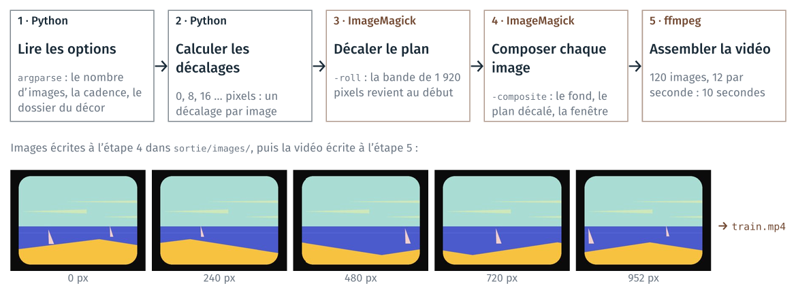
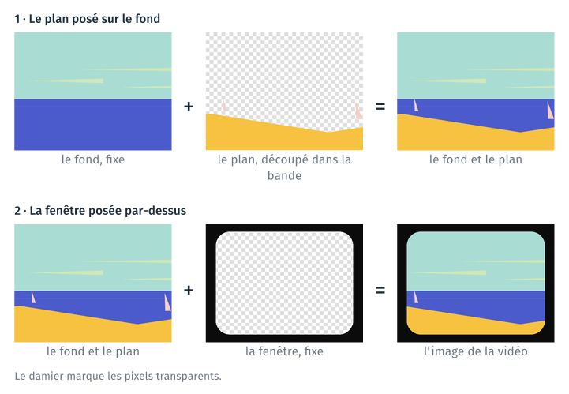
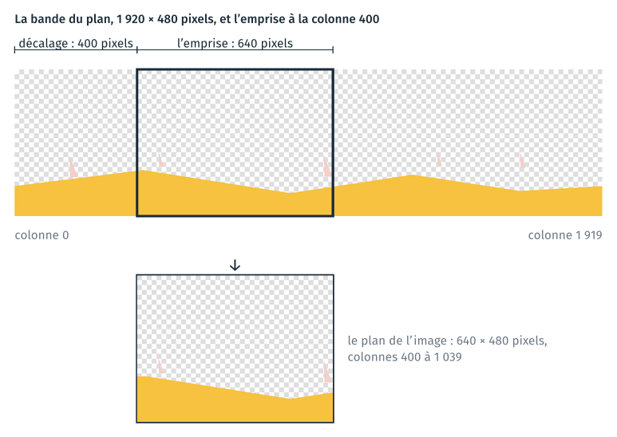
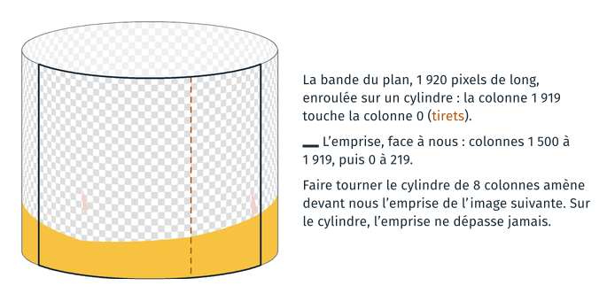
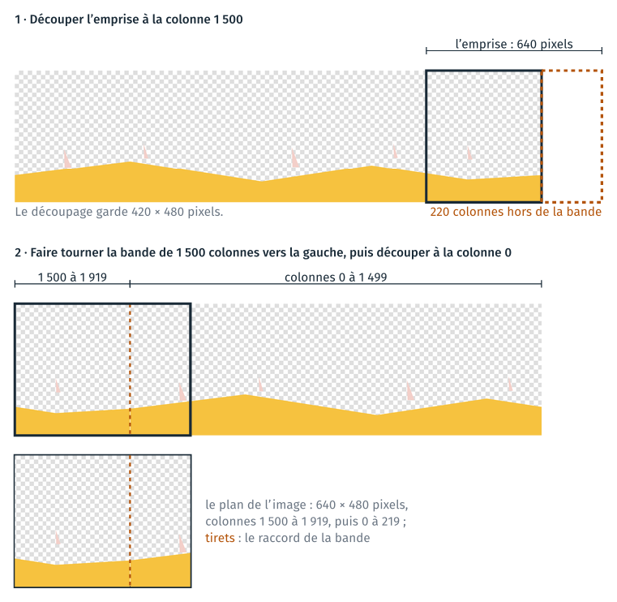
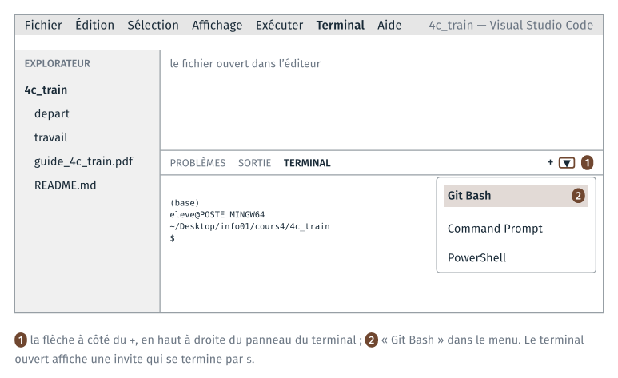
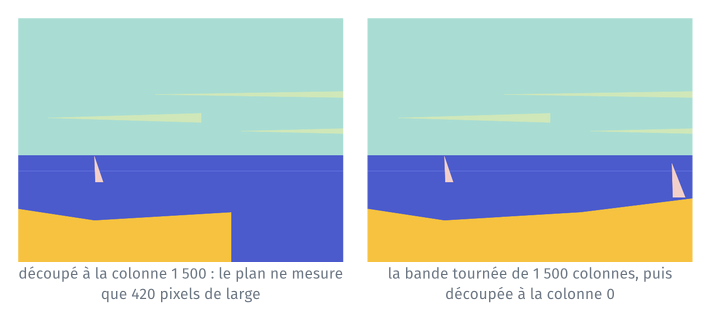
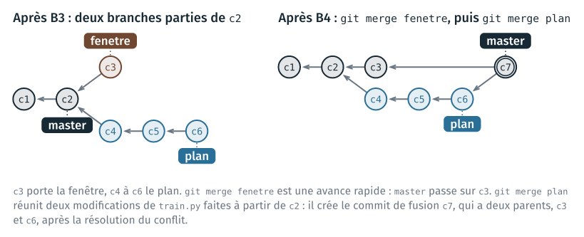
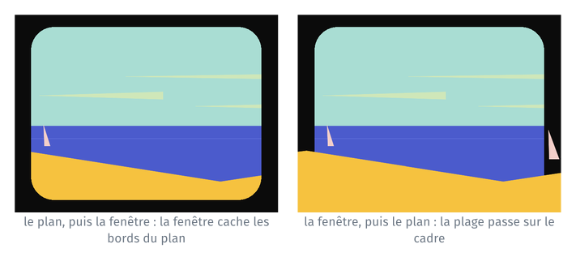
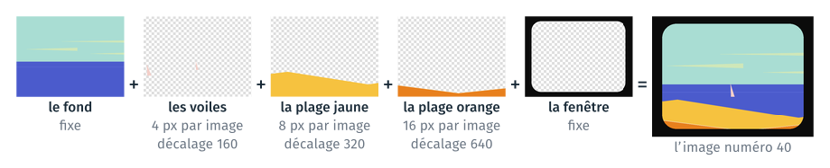

TD 4c — La fenêtre du train#
Le TD fabrique une courte vidéo : la mer vue de la fenêtre d’un train, les voiles et la plage qui défilent derrière la vitre, d’après la scène de la mer du clip « Moon » de Kid Francescoli. Le rendu est un projet
Python, versionné avec git, qui contient un script train.py appelable en
ligne de commande.
Chaque image de la vidéo superpose trois images du décor : le fond, le plan, découpé dans une bande plus large que l’image, et la fenêtre. La section « La méthode », après le tableau des étapes, décrit comment le programme compose une image, puis la vidéo, avec des schémas.
Le script enchaîne toutes les étapes de la fabrication de la vidéo :
la fonction
decalagescalcule de combien de pixels le paysage est décalé sur chaque image ; pour chaque décalage, la fonctionimageconstruit la commande qui compose l’image ;ImageMagick (
magick) compose chaque image : le fond fixe, le plan décalé, puis la fenêtre par-dessus ;ffmpeg assemble les images en une vidéo.
ImageMagick et ffmpeg sont des programmes en ligne de commande, comme git
(cours 2) et pandoc (cours 3). Le script les lance avec subprocess.run,
une fois par image pour magick et une fois à la fin pour ffmpeg : Python
automatise ainsi l’ensemble des étapes. Pendant le développement, chaque
étape du TD se termine par un commit git.
Le schéma suivant montre les étapes du script final, avec des images de la vidéo produite. Il est aussi dans la section 2 du notebook.

Le TD a deux parties.
Partie A (environ 35 minutes) : créer un environnement conda qui contient ces outils, puis exécuter le notebook
train.ipynbqui fabrique la vidéo.Partie B (environ 70 minutes) : construire le programme
train.py, lancé depuis un terminal, en suivant les étapes de la composition : le fond, puis la fenêtre et le plan sur deux branches git réunies par une fusion, puis la série d’images et la vidéo.
Pour chaque étape, le guide indique le dossier où se placer, les fichiers au début et à la fin, le code à écrire et l’endroit où l’écrire, les commandes à taper et la façon de vérifier le résultat.
Le tableau résume les étapes ; chaque nom d’étape renvoie à la page qui la détaille. Chaque page commence par un encadré qui résume l’étape.
Étape |
Ce qu’on fait |
Commits à la fin |
|---|---|---|
récupérer les fichiers du TD |
||
créer l’environnement |
||
activer l’environnement et vérifier les outils |
||
exécuter le notebook dans JupyterLab |
||
créer le dossier du projet et le dépôt git |
1 |
|
le fond, sur |
2 |
|
la fenêtre, sur la branche |
3 |
|
le plan, sur la branche |
6 |
|
réunir les deux branches : un conflit à résoudre |
7 |
|
une série d’images, sur la branche |
9 |
|
la vidéo, sur la branche |
11 |
|
le README complet |
12 |
|
B8 (facultatif) |
|
13 |
plusieurs plans, plusieurs vitesses |
La méthode#
Cette section décrit comment le programme fabrique une image de la vidéo, puis la vidéo, et dans quel ordre la partie B le construit. La section 1 du notebook reprend les mêmes schémas.
Composer une image#
Chaque image de la vidéo mesure 640 × 480 pixels. Elle est composée de trois images du décor, posées l’une sur l’autre : le fond, puis le plan, puis la fenêtre. Le fond contient le ciel, les nuages et la mer ; la fenêtre, un cadre noir et une vitre transparente. Les deux sont les mêmes sur toutes les images : seul le plan change d’une image à la suivante. Le damier des schémas marque les pixels transparents, qui laissent voir l’image placée dessous.

Découper le plan dans une bande#
Le plan contient les voiles et la plage. Il est dessiné sur une bande de 1 920 × 480 pixels, trois fois plus large qu’une image de la vidéo. Le plan d’une image est un rectangle de 640 × 480 pixels découpé dans la bande. On appelle ce rectangle l’emprise. Le décalage est le numéro de la colonne de la bande où commence l’emprise.

D’une image de la vidéo à la suivante, le décalage augmente de 8 pixels : l’emprise avance de 8 colonnes vers la droite dans la bande, et les voiles et la plage se déplacent de 8 pixels vers la gauche dans l’image.
Faire tourner la bande#
L’emprise dépasse le bord droit de la bande dès que le décalage dépasse 1 920 − 640 = 1 280. Avec un décalage de 1 500, le découpage ne garde que les 420 colonnes qui restent dans la bande.
La bande est dessinée pour que son bord droit se raccorde à son bord gauche : placée après la colonne 1 919, la colonne 0 continue le dessin. Enroulée sur un cylindre, comme les décors du clip posés sur une table tournante, la bande n’a plus de bord.

Le programme fait tourner la bande comme le cylindre. Pour un décalage de 1 500, il déplace la bande de 1 500 colonnes vers la gauche ; les colonnes qui sortent à gauche reviennent à droite. L’emprise est ensuite découpée à partir de la colonne 0, et ne dépasse plus.

Pour un décalage inférieur à 1 280, faire tourner la bande puis découper à la colonne 0 donne le même plan que découper à la colonne du décalage. Un décalage plus grand que la bande fait plus d’un tour : 2 120 donne le même plan que 200, car 2 120 = 1 920 + 200.
L’algorithme#
Le programme final, train.py, fait les opérations suivantes :
lire les options : le nombre d’images, la cadence de la vidéo, le dossier du décor ;
calculer le décalage de chaque image : 0, 8, 16… ;
pour chaque décalage, construire la commande
magickmorceau par morceau, puis la lancer :le fond ;
le plan : faire tourner la bande, découper l’emprise, puis poser le plan sur le fond (
-composite) ;la fenêtre, posée en dernier (
-composite) ;le nom du fichier à écrire ;
assembler les images en une vidéo avec ffmpeg.
Chaque morceau de la commande est une liste d’arguments, renvoyée par une
fonction : arguments_fond, arguments_plan, arguments_fenetre. La
fonction image ajoute ces listes l’une après l’autre avec +. L’ordre des
morceaux est l’ordre dans lequel magick pose les images.
Construire le programme étape par étape#
La partie B construit train.py dans l’ordre de la composition : une étape
ajoute une seule fonctionnalité, et se vérifie avant le commit, en ouvrant
l’image écrite et en lisant sa taille.
B1, le fond : le programme écrit une image qui ne contient que le fond, et affiche sa taille,
640x480.B2, la fenêtre : la fenêtre posée sur le fond, sur une branche
fenetre.B3, le plan : le plan posé sur le fond, puis l’option
--decalage, puis la bande qu’on fait tourner, sur une brancheplan.B4, la fusion des deux branches : l’image complète.
B5 et B6 : la série d’images, puis la vidéo.
La fenêtre et le plan ne dépendent pas l’un de l’autre : ils se développent
sur deux branches parties du même commit, celui du fond, puis se réunissent
par une fusion. Les deux branches modifient la fonction image au même
endroit : la fusion s’arrête sur un conflit, que l’étape B4 fait résoudre.
Rappels#
Un seul outil : VS Code. Tout le TD se fait dans VS Code : l’explorateur, à gauche, montre les fichiers ; l’éditeur, au centre, affiche le fichier ouvert ; le terminal, en bas, sert à taper les commandes. Le dossier du TD est ouvert à l’étape A1 et reste ouvert jusqu’à la fin.
Le terminal Git Bash. Le terminal est Git Bash, celui du cours 2. Pour
l’ouvrir : menu Terminal → Nouveau terminal. Si le terminal ouvert n’est pas
Git Bash, cliquer sur la flèche à côté du +, en haut à droite du panneau
du terminal, puis choisir « Git Bash ».

L’invite de Git Bash tient sur plusieurs lignes : le nom de l’environnement
conda actif entre parenthèses, puis eleve@POSTE MINGW64 suivi du dossier
courant ; la dernière ligne commence par $, et la commande se tape après.
Dans Git Bash, les chemins s’écrivent avec des / : C:\Users devient
/c/Users.
Changer de dossier. pwd affiche le dossier courant, ls liste son
contenu, cd nom_du_dossier descend dans un sous-dossier, cd .. remonte
d’un niveau. L”annexe rappelle ces commandes et leur équivalent
dans le terminal Windows.
Environnement conda. Un environnement est un dossier qui
contient un Python et des programmes installés pour un projet. conda env create -f environment.yml le crée à partir d’un fichier qui en donne la
liste ; conda activate nom l’active dans le terminal : les commandes
tapées ensuite (python, magick, ffmpeg, jupyter) sont celles de cet
environnement.
Si une étape de la partie B échoue. git status montre les fichiers
modifiés depuis le dernier commit ; git restore train.py remet le fichier
dans l’état du dernier commit.
Partie A · Exécuter le notebook#
A1 · Récupérer les fichiers du TD, les ouvrir dans VS Code#
À faire : copier
info01-cours4.zipsur le Bureau et le décompresser ; ouvrir le dossiercours4/4c_train/dans VS Code ; ouvrir un terminal Git Bash.À obtenir : l’explorateur de VS Code montre
depart/ettravail/;pwdse termine parcours4/4c_train.
Copier l’archive info01-cours4.zip du dossier partagé formationTemp sur
le Bureau, dans le dossier info01, puis la décompresser (clic droit →
Extraire tout). Ne pas travailler dans le dossier partagé.
Ouvrir VS Code, puis Fichier → Ouvrir le dossier… → choisir
info01/cours4/4c_train/. Ouvrir ensuite un terminal Git Bash (voir les
rappels).
Vérification : l’explorateur de VS Code montre le contenu du dossier ;
dans le terminal, pwd affiche un chemin qui se termine par
cours4/4c_train, et ls liste depart, travail, le guide et
README.md. Le dossier contient :
4c_train/
├── depart/
│ ├── environment.yml
│ ├── decor/
│ │ ├── fond.png
│ │ ├── plan.png
│ │ ├── fenetre.png
│ │ ├── voiles.png
│ │ ├── plage_jaune.png
│ │ └── plage.png
│ ├── CREDITS.md
│ ├── illustrations/
│ │ └── programme_train.png
│ ├── notebook/
│ │ └── train.ipynb
│ └── modeles/
│ ├── README.md
│ └── pyproject.toml
├── travail/ (vide)
├── guide_4c_train.pdf (ce guide)
└── README.md
A2 · Rendre conda disponible, créer l’environnement animation#
À faire : une fois par poste, rendre
condadisponible dans Git Bash (source …puisconda init bash) ; dansdepart/:conda env create -f environment.yml.À obtenir : l’invite commence par
(base);conda env listafficheanimation.
A2.1 conda dans Git Bash#
Git Bash ne connaît pas la commande conda au démarrage. Dans le terminal :
source /c/ProgramData/anaconda3/etc/profile.d/conda.sh
conda init bash
source rend conda disponible dans ce terminal. conda init bash écrit la
même instruction dans un fichier que Git Bash lit à chaque ouverture : les
terminaux suivants ont conda sans rien taper. Cette partie A2.1 ne se fait
qu’une fois par poste.
Fermer le terminal (icône de corbeille, en haut à droite du panneau du terminal) et en ouvrir un nouveau, Git Bash.
Vérification : la première ligne de l’invite est (base) ;
conda --version affiche conda 2….
Si source répond No such file or directory, Anaconda est installé dans
un autre dossier du poste. Essayer
source /c/Users/$USERNAME/anaconda3/etc/profile.d/conda.sh, ou demander à
l’enseignant.
A2.2 Le fichier environment.yml#
Dans l’explorateur de VS Code, cliquer sur depart/environment.yml pour
l’afficher :
name: animation
channels:
- conda-forge
dependencies:
- python=3.12
- jupyterlab
- imagemagick
- ffmpeg
name est le nom de l’environnement ; channels dit où conda télécharge
les paquets ; dependencies liste ce qui est installé.
A2.3 Créer l’environnement#
Dans le terminal, depuis le dossier du TD :
cd depart
ls
conda env create -f environment.yml
Vérification : ls liste environment.yml. conda calcule ensuite les
paquets à installer, les télécharge et les installe. Cela prend plusieurs
minutes : lire la partie B pendant ce temps. La commande se termine par des
lignes qui indiquent comment activer l’environnement :
# To activate this environment, use
#
# $ conda activate animation
Puis :
conda env list
affiche une ligne animation, avec le chemin du dossier de
l’environnement.
Erreurs fréquentes :
EnvironmentFileNotFound: le terminal n’est pas dansdepart/. Vérifier avecpwdetls.CondaValueError: prefix already exists: l’environnement existe déjà (créé par une autre personne sur ce poste, ou lors d’un essai). Passer à l’étape A3.une erreur de connexion (
CondaHTTPError) : pas d’accès au réseau. Prévenir l’enseignant.
A3 · Activer l’environnement et vérifier les outils#
À faire :
conda activate animation, puismagick -versionetffmpeg -version.À obtenir : la première ligne de l’invite est
(animation); les deux versions s’affichent.
Dans le terminal :
conda activate animation
Vérification : la première ligne de l’invite est (animation) au lieu
de (base).
Vérifier que les trois programmes sont ceux de l’environnement :
which python
magick -version
ffmpeg -version
Vérification :
which pythonaffiche un chemin qui contientenvs/animation;magick -versionafficheVersion: ImageMagick 7…;ffmpeg -versionafficheffmpeg version ….
Si magick répond command not found, l’environnement n’est pas actif :
refaire conda activate animation.
A4 · Exécuter le notebook dans JupyterLab#
À faire : copier le notebook dans
travail/, puiscd travailetjupyter lab; exécuter le notebook section par section.À obtenir : section 2 : trois chemins dans
envs\animation; section 9 : la vidéo.
Copier le notebook dans travail/, puis lancer JupyterLab. Dans le
terminal, où l’environnement animation est actif :
cd ..
cp depart/notebook/train.ipynb travail/
cd travail
jupyter lab
JupyterLab est lancé depuis ce terminal, l’environnement animation actif :
c’est ainsi que le notebook trouve magick et ffmpeg. Ne pas le lancer
depuis Anaconda Navigator, qui le lance dans l’environnement base.
Vérification : le navigateur s’ouvre sur JupyterLab ; s’il ne s’ouvre
pas, copier dans le navigateur l’adresse http://localhost:8888/lab?token=…
affichée dans le terminal. Le panneau de gauche de JupyterLab montre
train.ipynb. Ce terminal reste occupé par JupyterLab : le fermer arrête
JupyterLab.
Exécuter. Double-cliquer sur train.ipynb, puis exécuter les cellules
une par une avec Maj + Entrée, en lisant le texte entre les cellules.
Vérifications :
la première cellule affiche trois chemins qui contiennent
envs\animation(ouenvs/animation). SimagickouffmpegvautNone, JupyterLab n’a pas été lancé depuis l’environnementanimation: fermer JupyterLab, refaire A3 et A4 ;la section 1 décrit la composition d’une image, sans code ; les sections 3 à 7 affichent chacune une étape de la composition et la taille de l’image obtenue ;
la dernière section affiche la vidéo (
train.mp4, 120 images, 10 secondes) ;travail/produit/contient les images d’essai, le dossierimages/et la vidéo.
Essayer ensuite de changer les valeurs de la dernière section, comme le propose le cadre « À essayer » du notebook : ce sont les trois valeurs que la partie B passera sur la ligne de commande.
Fin de la partie A. Fermer l’onglet du notebook ; JupyterLab peut rester ouvert.
Partie B · Du notebook au programme#
La partie B construit le programme train.py en suivant les étapes de la
composition d’une image (section 1 du notebook), puis la série d’images et
la vidéo :
le fond (B1), sur
master:python train.pyécritsortie/train.png, qui ne contient que le fond ;la fenêtre (B2), sur la branche
fenetre: la fenêtre posée sur le fond ;le plan (B3), sur la branche
plan, partie du même commit quefenetre: le plan posé sur le fond, l’option--decalage, puis la bande qu’on fait tourner ;la fusion (B4) : les deux branches sont réunies dans
master. Elles ont modifié toutes les deux la fonctionimageau même endroit : la fusion s’arrête sur un conflit, à résoudre comme au TD 4c du cours 2 ;une série d’images (B5), sur la branche
serie;la vidéo (B6), sur la branche
video.
Les branches fenetre et plan développent deux fonctionnalités
indépendantes à partir du même commit, comme deux personnes qui travaillent
en même temps sur le même programme. Le programme a une fonction main et
lit ses options avec argparse dès la première étape (cours 3). Chaque étape
reprend une section du notebook.
B0 · Le dossier du projet et le dépôt git#
À faire : dans un second terminal Git Bash,
conda activate animation; créertravail/train/avecenvironment.ymlet le dossierdecor/, un.gitignoreet un README d’une ligne ;git init, puis un premier commit.À obtenir :
git log --onelineaffiche une ligne.
Un nouveau terminal. Le premier terminal fait tourner JupyterLab. Ouvrir
un second terminal Git Bash (flèche à côté du +, puis « Git Bash ») : il
s’ouvre dans le dossier du TD. Y activer l’environnement :
conda activate animation
Vérification : la première ligne de l’invite est (animation). À refaire
dans chaque nouveau terminal.
Créer le dossier du projet et y copier ce dont le programme a besoin :
mkdir travail/train
cp depart/environment.yml travail/train/
cp -r depart/decor travail/train/
cd travail/train
ls
Vérification : l’invite se termine par travail/train ; ls liste
environment.yml et decor. Le dossier apparaît aussi dans l’explorateur
de VS Code.
Créer le dépôt git :
git init
git status
Vérification : git init affiche Initialized empty Git repository
(ou Dépôt Git vide initialisé) ; git status liste les fichiers du
dossier sous « Untracked files » (« Fichiers non suivis »). Si git status
liste depart/ ou travail/, le dépôt a été créé dans le mauvais dossier :
supprimer le dossier caché .git qui vient d’être créé (rm -rf .git),
revenir dans travail/train/ et recommencer.
Le fichier .gitignore et un premier README. Le programme écrira ses
images et sa vidéo dans un dossier sortie/ : ces fichiers ne sont pas
versionnés. Le README, d’une ligne pour l’instant, sera complété à l’étape
B7.
echo "sortie/" > .gitignore
echo "# Train" > README.md
git add .
git commit -m "Le projet : environnement, .gitignore et README"
git log --oneline
Vérification : git log --oneline affiche une ligne ; git status
affiche « nothing to commit » (« rien à valider »).
Dossier à la fin de B0 :
travail/train/
├── .git/ (caché : le dépôt)
├── .gitignore
├── README.md
├── decor/ (les images du décor)
└── environment.yml
B1 · Le fond, sur master#
À faire : créer
train.py: les fonctionsarguments_fond,imageettaille, puismain; un commit surmaster.À obtenir :
python train.pyécritsortie/train.png, le fond seul, et affiche640x480; deux commits.
Entrée : la section 3 du notebook. Sortie : python train.py écrit
sortie/train.png, qui ne contient que le fond, et affiche sa taille.
Le fond est la base commune des deux branches des étapes B2 et B3 : il est
écrit directement sur master, en un commit.
B1.1 L’en-tête du fichier#
Créer le fichier train.py dans travail/train/ (explorateur de VS Code :
clic droit sur le dossier train → Nouveau fichier). Y coller la
description, les imports, les programmes et les chemins :
"""La fenêtre du train : une image, une série d'images ou une vidéo.
Chaque image superpose trois images du décor : le fond, le plan découpé dans
une bande, puis la fenêtre. Python calcule le décalage du plan sur chaque
image et construit la commande d'ImageMagick ; ffmpeg assemble la vidéo.
python train.py --decalage 200
python train.py --images 120
python train.py --images 120 --video --cadence 12 --nettoyer
python train.py --help
À lancer dans l'environnement `animation` ; le décor est lu dans `decor/`,
les fichiers sont écrits dans `sortie/`, dans le dossier du terminal.
"""
import argparse
import subprocess
from pathlib import Path
# Les programmes
MAGICK = "magick"
FFMPEG = "ffmpeg"
# Les fichiers produits vont dans sortie/, dans le dossier du terminal
SORTIE = Path.cwd() / "sortie"
IMAGES = SORTIE / "images"
B1.2 Les fonctions de l’image#
Dessous, coller les trois fonctions de la section 3 du notebook :
# ---- Une image (sections 3 à 7 du notebook) ---------------------------------
def arguments_fond(decor):
"""Les arguments de magick qui lisent le fond, une image de 640 × 480 pixels."""
return [str(decor / "fond.png")]
def image(fichier, decor):
"""Une image de la vidéo, 640 × 480 pixels, écrite dans `fichier`."""
commande = [MAGICK] + arguments_fond(decor)
commande = commande + [str(fichier)]
subprocess.run(commande, check=True)
def taille(fichier):
"""La largeur et la hauteur de l'image, en pixels, écrites par magick identify : « 640x480 »."""
resultat = subprocess.run([MAGICK, "identify", "-format", "%wx%h", str(fichier)],
capture_output=True, text=True, check=True)
return resultat.stdout
arguments_fond renvoie le premier morceau de la commande magick : le
chemin du fond. image construit la commande morceau par morceau et la
lance ; pour l’instant, elle ne contient que le fond et le fichier à écrire.
taille renvoie la largeur et la hauteur d’une image, écrites par magick identify.
B1.3 La fonction main#
À la fin du fichier, coller :
# ---- Le programme ------------------------------------------------------------
def main():
analyseur = argparse.ArgumentParser(description="La fenêtre du train : une image, une série d'images ou une vidéo.")
analyseur.add_argument("--decor", default="decor", help="le dossier des images du décor (défaut : decor)")
options = analyseur.parse_args()
decor = Path(options.decor)
if not (decor / "fond.png").exists():
analyseur.error("décor introuvable : " + options.decor)
SORTIE.mkdir(exist_ok=True)
# Une image
fichier = SORTIE / "train.png"
image(fichier, decor)
print(fichier, taille(fichier))
# Vrai quand le fichier est lancé par `python`, faux quand il est importé par
# un autre fichier : dans ce cas, main() n'est pas appelé.
if __name__ == "__main__":
main()
L’option --decor donne le dossier des images du décor ; sa valeur par
défaut, decor, est le dossier copié à l’étape B0. Si ce dossier ne contient
pas fond.png, analyseur.error affiche un message et arrête le programme.
Enregistrer (Ctrl+S). Vérifications :
Commande |
Ce qui doit s’afficher |
|---|---|
|
|
|
|
|
l’aide du programme et l’option |
git add train.py
git commit -m "Le fond : une image de 640 × 480 pixels"
git log --oneline
Vérification : deux lignes.
B2 · La fenêtre, sur la branche fenetre#
À faire : sur une branche
fenetre: la fonctionarguments_fenetreet une ligne dansimage; un commit.À obtenir :
sortie/train.pngmontre la fenêtre posée sur le fond ; trois commits.
Entrée : la section 7 du notebook, sans le plan. Sortie :
python train.py écrit la fenêtre posée sur le fond.
git checkout -b fenetre
git branch
Vérification : git branch affiche * fenetre et master ; l’étoile
marque la branche courante.
Dans train.py, entre la fonction arguments_fond et la fonction image,
coller :
def arguments_fenetre(decor):
"""Les arguments de magick qui lisent la fenêtre, une image de 640 × 480 pixels."""
return [str(decor / "fenetre.png")]
Puis, dans la fonction image, ajouter la ligne de la fenêtre sous la ligne
qui lit le fond. La fonction devient :
def image(fichier, decor):
"""Une image de la vidéo, 640 × 480 pixels, écrite dans `fichier`."""
commande = [MAGICK] + arguments_fond(decor)
commande = commande + arguments_fenetre(decor) + ["-composite"]
commande = commande + [str(fichier)]
subprocess.run(commande, check=True)
-composite pose la dernière image lue, la fenêtre, sur l’image lue avant
elle, le fond : les pixels transparents de la vitre laissent voir le fond.
Enregistrer. Vérification : python train.py affiche
…/sortie/train.png 640x480 ; l’image montre le fond derrière la vitre, et
le cadre noir autour.
git commit -am "Fenêtre : la fenêtre posée sur le fond"
B3 · Le plan, sur la branche plan#
À faire : depuis
master, une brancheplan: le plan posé sur le fond, l’option--decalage, puis la bande qu’on fait tourner ; un commit chacun.À obtenir :
python train.py --decalage 1500écrit une image où la plage traverse toute l’image ; six commits.
Entrée : les sections 4 à 6 du notebook. Sortie :
python train.py --decalage 200 écrit le plan décalé de 200 pixels, posé
sur le fond, dans sortie/train_0200.png.
B3.1 Une branche partie de master#
La branche plan part du même commit que fenetre : revenir d’abord sur
master.
git checkout master
git checkout -b plan
Vérification : dans VS Code, train.py n’a plus la fonction
arguments_fenetre : le fichier est revenu à l’état du commit de l’étape B1.
Le travail de l’étape B2 est enregistré sur la branche fenetre.
B3.2 Le plan posé sur le fond#
Entre la fonction arguments_fond et la fonction image, coller la
fonction qui découpe l’emprise à la colonne 0 (sections 4 et 6 du notebook) :
def arguments_plan(decor):
"""Les arguments de magick qui lisent la bande du plan et en découpent 640 × 480 pixels à partir de la colonne 0."""
return ["(", str(decor / "plan.png"),
"-crop", "640x480+0+0", "+repage", ")"]
Puis ajouter la ligne du plan dans image :
def image(fichier, decor):
"""Une image de la vidéo, 640 × 480 pixels, écrite dans `fichier`."""
commande = [MAGICK] + arguments_fond(decor)
commande = commande + arguments_plan(decor) + ["-composite"]
commande = commande + [str(fichier)]
subprocess.run(commande, check=True)
Enregistrer. Vérification : python train.py écrit une image où les
voiles et la plage sont posées sur le fond.
git commit -am "Plan : le plan posé sur le fond"
B3.3 L’option --decalage#
Le décalage est la colonne de la bande où commence l’emprise (section « La
méthode », schéma de l’emprise). -crop 640x480+400+0 découpe l’emprise à la
colonne 400. Remplacer la fonction arguments_plan par :
def arguments_plan(decor, decalage):
"""Les arguments de magick qui lisent la bande du plan et en découpent 640 × 480 pixels à partir de la colonne `decalage`."""
return ["(", str(decor / "plan.png"),
"-crop", "640x480+" + str(decalage) + "+0", "+repage", ")"]
puis la fonction image, qui reçoit maintenant le décalage, par :
def image(fichier, decor, decalage):
"""Une image de la vidéo, 640 × 480 pixels, écrite dans `fichier`."""
commande = [MAGICK] + arguments_fond(decor)
commande = commande + arguments_plan(decor, decalage) + ["-composite"]
commande = commande + [str(fichier)]
subprocess.run(commande, check=True)
puis toute la fonction main, de def main(): jusqu’à la ligne vide qui
précède if __name__, par :
def main():
analyseur = argparse.ArgumentParser(description="La fenêtre du train : une image, une série d'images ou une vidéo.")
analyseur.add_argument("-d", "--decalage", type=int, default=0, help="le décalage du plan d'une image seule, en pixels (défaut : 0)")
analyseur.add_argument("--decor", default="decor", help="le dossier des images du décor (défaut : decor)")
options = analyseur.parse_args()
decor = Path(options.decor)
if not (decor / "fond.png").exists():
analyseur.error("décor introuvable : " + options.decor)
SORTIE.mkdir(exist_ok=True)
# Une image
fichier = SORTIE / ("train_" + str(options.decalage).zfill(4) + ".png")
image(fichier, decor, options.decalage)
print(fichier, taille(fichier))
Le nom du fichier écrit contient le décalage, sur quatre chiffres : deux décalages donnent deux fichiers, que l’on peut comparer.
Enregistrer. Vérifications :
Commande |
Ce qui doit s’afficher |
|---|---|
|
|
|
|
À 1 500, l’emprise dépasse la bande (notebook, section 1.3) : le découpage
ne garde que 420 × 480 pixels, que -composite pose en haut à gauche du
fond.

git commit -am "Plan : l'option --decalage"
B3.4 Faire tourner la bande#
La bande se raccorde d’un bord à l’autre : le programme la fait tourner
avant de découper l’emprise (section « La méthode », schémas du cylindre et
de la rotation). Remplacer la fonction arguments_plan par la version de la
section 5 du notebook :
def arguments_plan(decor, decalage):
"""Les arguments de magick qui lisent la bande du plan, la font tourner de `decalage` colonnes
vers la gauche, puis en découpent 640 × 480 pixels à partir de la colonne 0."""
return ["(", str(decor / "plan.png"),
"-roll", "-" + str(decalage) + "+0",
"-crop", "640x480+0+0", "+repage", ")"]
-roll -1500+0 fait tourner la bande de 1 500 colonnes vers la gauche ;
-crop 640x480+0+0 découpe ensuite l’emprise à partir de la colonne 0, qui
ne dépasse plus.
Enregistrer. Vérifications :
Commande |
Ce qui doit s’afficher |
|---|---|
|
la plage traverse toute l’image (image de droite du schéma ci-dessus) |
|
|
|
|
git commit -am "Plan : faire tourner la bande"
git log --oneline --graph --all
Vérification : le graphe dessine deux branches parties du commit de
l’étape B1 : fenetre, un commit, et plan, trois commits.
B4 · Réunir les deux branches : un conflit#
À faire :
git merge fenetre, puisgit merge plan; résoudre le conflit danstrain.py;git add, puisgit commit --no-edit.À obtenir :
python train.py --decalage 200écrit l’image complète ; un commit de fusion ; sept commits.
Sortie : sur master, python train.py --decalage 200 écrit l’image
complète : le fond, le plan, puis la fenêtre.

B4.1 Fusionner fenetre#
git checkout master
git merge fenetre
Vérification : git affiche Fast-forward : master n’a pas avancé
depuis la création de fenetre, git déplace master sur le commit de la
fenêtre.
B4.2 Fusionner plan : le conflit#
git merge plan
Vérification : git affiche
CONFLICT (content): Merge conflict in train.py, puis
Automatic merge failed; fix conflicts and then commit the result. La
fusion est en cours : git status liste train.py sous « Unmerged paths »
(« Chemins non fusionnés »).
Depuis le commit de l’étape B1, les deux branches ont modifié train.py au
même endroit : chacune a ajouté une fonction sous arguments_fond, et une
ligne sous la ligne qui lit le fond ; la branche plan a aussi ajouté le
paramètre decalage à image. Git réunit seul les modifications qui portent
sur des lignes différentes, comme celles de main ; ici, il ne peut pas
choisir, et il écrit les deux versions dans le fichier.
Ouvrir train.py dans VS Code. Sous la fonction arguments_fond, le fichier
contient :
<<<<<<< HEAD
def arguments_fenetre(decor):
"""Les arguments de magick qui lisent la fenêtre, une image de 640 × 480 pixels."""
return [str(decor / "fenetre.png")]
def image(fichier, decor):
"""Une image de la vidéo, 640 × 480 pixels, écrite dans `fichier`."""
commande = [MAGICK] + arguments_fond(decor)
commande = commande + arguments_fenetre(decor) + ["-composite"]
=======
def arguments_plan(decor, decalage):
"""Les arguments de magick qui lisent la bande du plan, la font tourner de `decalage` colonnes
vers la gauche, puis en découpent 640 × 480 pixels à partir de la colonne 0."""
return ["(", str(decor / "plan.png"),
"-roll", "-" + str(decalage) + "+0",
"-crop", "640x480+0+0", "+repage", ")"]
def image(fichier, decor, decalage):
"""Une image de la vidéo, 640 × 480 pixels, écrite dans `fichier`."""
commande = [MAGICK] + arguments_fond(decor)
commande = commande + arguments_plan(decor, decalage) + ["-composite"]
>>>>>>> plan
Entre <<<<<<< HEAD et ======= : la version de master, qui vient de
fenetre ; entre ======= et >>>>>>> plan : la version de plan.
B4.3 Résoudre : écrire une version qui réunit les deux#
L’image complète demande les deux fonctions, le paramètre decalage et
les deux lignes : la version qui réunit les deux s’écrit à la main. Remplacer
toutes les lignes, de <<<<<<< HEAD jusqu’à >>>>>>> plan compris, par :
def arguments_plan(decor, decalage):
"""Les arguments de magick qui lisent la bande du plan, la font tourner de `decalage` colonnes
vers la gauche, puis en découpent 640 × 480 pixels à partir de la colonne 0."""
return ["(", str(decor / "plan.png"),
"-roll", "-" + str(decalage) + "+0",
"-crop", "640x480+0+0", "+repage", ")"]
def arguments_fenetre(decor):
"""Les arguments de magick qui lisent la fenêtre, une image de 640 × 480 pixels."""
return [str(decor / "fenetre.png")]
def image(fichier, decor, decalage):
"""Une image de la vidéo, 640 × 480 pixels, écrite dans `fichier`."""
commande = [MAGICK] + arguments_fond(decor)
commande = commande + arguments_plan(decor, decalage) + ["-composite"]
commande = commande + arguments_fenetre(decor) + ["-composite"]
La ligne du plan vient avant celle de la fenêtre : magick pose les images
dans l’ordre de la commande, et la fenêtre doit être posée en dernier. Les
liens Accept Both Changes (« Accepter les deux modifications ») de VS Code
garderaient les deux versions l’une après l’autre : deux fonctions image,
et la fenêtre avant le plan.
Enregistrer, puis vérifier qu’il ne reste aucun marqueur et que le programme écrit l’image complète :
grep -n "<<<<<<<\|=======\|>>>>>>>" train.py
python train.py --decalage 200
Vérification : grep n’affiche rien ; sortie/train_0200.png montre le
fond, le plan, puis la fenêtre : le cadre noir cache les bords du plan. Si
la plage passe sur le cadre, les deux lignes sont dans le mauvais ordre.

B4.4 Terminer la fusion#
git add train.py
git commit --no-edit
git log --oneline --graph --all
git add marque le conflit comme résolu. git commit --no-edit crée le
commit de fusion avec le message proposé par git, Merge branch 'plan'.
Tant que la fusion n’est pas terminée, git merge --abort remet master
dans l’état d’avant git merge plan.
Vérification : le graphe dessine le commit de fusion, qui a deux
parents ; git log --oneline affiche sept lignes.
B5 · Une série d’images, sur la branche serie#
À faire : sur une branche
serie: les fonctionsdecalagesetserie, puis l’option--images, un commit chacun ; fusion dansmaster.À obtenir : une image par décalage dans
sortie/images/; neuf commits.
Entrée : la fonction decalages de la section 8 et la première cellule
de la section 9 du notebook. Sortie : python train.py --images 120
écrit une image par décalage dans sortie/images/.
git checkout -b serie
B5.1 Les fonctions decalages et serie#
Dans train.py, entre la fonction taille et la ligne
# ---- Le programme, coller :
# ---- Une série d'images (sections 8 et 9 du notebook) -----------------------
VITESSE = 8 # le décalage de plus à chaque image, en pixels
def decalages(nombre, vitesse):
"""Le décalage de chaque image : 0, puis `vitesse` pixels de plus à chaque image."""
liste = []
for numero in range(nombre):
liste.append(numero * vitesse)
return liste
def serie(decor, nombre):
"""`nombre` images, le plan un peu plus décalé à chaque image, dans IMAGES ; renvoie le nombre d'images."""
IMAGES.mkdir(parents=True, exist_ok=True)
for ancienne in IMAGES.glob("img_*.png"):
ancienne.unlink()
liste = decalages(nombre, VITESSE)
numero = 0
for decalage in liste:
numero = numero + 1
fichier = IMAGES / ("img_" + str(numero).zfill(4) + ".png")
image(fichier, decor, decalage)
return len(liste)
Enregistrer. Vérification : python train.py --help fonctionne comme
avant : les nouvelles fonctions ne sont pas encore appelées.
git commit -am "Série : les fonctions decalages et serie"
B5.2 L’option --images dans main#
Remplacer toute la fonction main par :
def main():
analyseur = argparse.ArgumentParser(description="La fenêtre du train : une image, une série d'images ou une vidéo.")
analyseur.add_argument("-d", "--decalage", type=int, default=0, help="le décalage du plan d'une image seule, en pixels (défaut : 0)")
analyseur.add_argument("--decor", default="decor", help="le dossier des images du décor (défaut : decor)")
analyseur.add_argument("-n", "--images", type=int, help="une série : ce nombre d'images, le plan décalé de 8 pixels de plus à chaque image")
options = analyseur.parse_args()
decor = Path(options.decor)
if not (decor / "fond.png").exists():
analyseur.error("décor introuvable : " + options.decor)
SORTIE.mkdir(exist_ok=True)
if options.images is None:
# Une image
fichier = SORTIE / ("train_" + str(options.decalage).zfill(4) + ".png")
image(fichier, decor, options.decalage)
print(fichier, taille(fichier))
else:
# Une série d'images
nombre = serie(decor, options.images)
print(nombre, "images dans", IMAGES)
La nouvelle option n’a pas de valeur par défaut : sans elle,
options.images vaut None, et le programme écrit une image seule, comme
en B4. Avec elle, il écrit la série.
Enregistrer. Vérifications :
Commande |
Ce qui doit s’afficher |
|---|---|
|
|
|
une image seule, comme en B4 |
|
l’option |
git commit -am "Série : l'option --images"
git checkout master
git merge serie
Vérification : Fast-forward ; git log --oneline affiche neuf lignes.
B6 · La vidéo, sur la branche video#
À faire : sur une branche
video:assembleret les options--videoet--cadence, puis l’option--nettoyer, un commit chacun ; fusion dansmaster.À obtenir :
sortie/train.mp4; onze commits.
Entrée : la seconde cellule de la section 9 du notebook (ffmpeg).
Sortie : python train.py --images 120 --video écrit sortie/train.mp4 ;
avec --nettoyer, le dossier sortie/images/ est ensuite supprimé.
B6.1 La fonction assembler, les options --video et --cadence#
git checkout -b video
Dans train.py, après la fonction serie, coller :
# ---- La vidéo (section 9 du notebook, seconde cellule) ----------------------
def assembler(video, cadence):
"""La vidéo à partir des images img_0001.png, img_0002.png… du dossier IMAGES."""
subprocess.run([FFMPEG, "-y", "-loglevel", "error",
"-framerate", str(cadence),
"-i", str(IMAGES / "img_%04d.png"),
"-c:v", "mpeg4", "-q:v", "3", "-pix_fmt", "yuv420p",
str(video)], check=True)
Puis remplacer la fonction main par :
def main():
analyseur = argparse.ArgumentParser(description="La fenêtre du train : une image, une série d'images ou une vidéo.")
analyseur.add_argument("-d", "--decalage", type=int, default=0, help="le décalage du plan d'une image seule, en pixels (défaut : 0)")
analyseur.add_argument("--decor", default="decor", help="le dossier des images du décor (défaut : decor)")
analyseur.add_argument("-n", "--images", type=int, help="une série : ce nombre d'images, le plan décalé de 8 pixels de plus à chaque image")
analyseur.add_argument("--video", action="store_true", help="assemble la série en vidéo (avec --images)")
analyseur.add_argument("-c", "--cadence", type=int, default=12, help="images par seconde de la vidéo (défaut : 12)")
options = analyseur.parse_args()
if options.video and options.images is None:
analyseur.error("--video demande une série : ajouter --images")
decor = Path(options.decor)
if not (decor / "fond.png").exists():
analyseur.error("décor introuvable : " + options.decor)
SORTIE.mkdir(exist_ok=True)
if options.images is None:
# Une image
fichier = SORTIE / ("train_" + str(options.decalage).zfill(4) + ".png")
image(fichier, decor, options.decalage)
print(fichier, taille(fichier))
else:
# Une série d'images
nombre = serie(decor, options.images)
print(nombre, "images dans", IMAGES)
# La vidéo
if options.video:
video = SORTIE / "train.mp4"
assembler(video, options.cadence)
print(video, ":", nombre, "images à", options.cadence, "images par seconde")
action="store_true" fait de --video une option sans valeur : présente,
elle vaut True.
Enregistrer. Vérifications :
Commande |
Ce qui doit s’afficher |
|---|---|
|
|
|
|
git commit -am "Vidéo : la fonction assembler, les options --video et --cadence"
B6.2 L’option --nettoyer#
En tête du fichier, ajouter import shutil aux imports :
import argparse
import shutil
import subprocess
Après la fonction assembler, coller :
def nettoyer():
"""Supprime les fichiers intermédiaires : le dossier des images de la série."""
shutil.rmtree(IMAGES)
shutil.rmtree supprime un dossier et tout son contenu. Puis remplacer la
fonction main par :
def main():
analyseur = argparse.ArgumentParser(description="La fenêtre du train : une image, une série d'images ou une vidéo.")
analyseur.add_argument("-d", "--decalage", type=int, default=0, help="le décalage du plan d'une image seule, en pixels (défaut : 0)")
analyseur.add_argument("--decor", default="decor", help="le dossier des images du décor (défaut : decor)")
analyseur.add_argument("-n", "--images", type=int, help="une série : ce nombre d'images, le plan décalé de 8 pixels de plus à chaque image")
analyseur.add_argument("--video", action="store_true", help="assemble la série en vidéo (avec --images)")
analyseur.add_argument("-c", "--cadence", type=int, default=12, help="images par seconde de la vidéo (défaut : 12)")
analyseur.add_argument("--nettoyer", action="store_true", help="supprime les images de la série une fois la vidéo écrite")
options = analyseur.parse_args()
if options.video and options.images is None:
analyseur.error("--video demande une série : ajouter --images")
decor = Path(options.decor)
if not (decor / "fond.png").exists():
analyseur.error("décor introuvable : " + options.decor)
SORTIE.mkdir(exist_ok=True)
if options.images is None:
# Une image
fichier = SORTIE / ("train_" + str(options.decalage).zfill(4) + ".png")
image(fichier, decor, options.decalage)
print(fichier, taille(fichier))
else:
# Une série d'images
nombre = serie(decor, options.images)
print(nombre, "images dans", IMAGES)
# La vidéo, puis les fichiers intermédiaires supprimés si demandé
if options.video:
video = SORTIE / "train.mp4"
assembler(video, options.cadence)
print(video, ":", nombre, "images à", options.cadence, "images par seconde")
if options.nettoyer:
nettoyer()
print("images intermédiaires supprimées")
Enregistrer. Vérification : python train.py --images 24 --video --nettoyer
affiche images intermédiaires supprimées ; sortie/ contient la vidéo, et
sortie/images/ n’existe plus.
git commit -am "Vidéo : l'option --nettoyer"
git checkout master
git merge video
git log --oneline
Vérification : Fast-forward ; onze lignes.
B7 · Le README complet#
À faire : remplacer le README par le modèle et le compléter ; un commit.
À obtenir : douze commits.
Remplacer README.md par le modèle depart/modeles/README.md :
cp ../../depart/modeles/README.md README.md
L’ouvrir dans VS Code et remplacer chaque passage « (À compléter …) » :
une phrase qui dit ce que fait le programme ;
comment récupérer le dossier (archive ou
git clone) ;pour chacune des trois fonctionnalités, une image, une série d’images et une vidéo, la commande et ce qu’elle écrit dans
sortie/;votre nom.
Vérification : Ctrl+Maj+V affiche l’aperçu. Chaque commande du README
fonctionne quand on la colle dans le terminal, depuis travail/train/,
l’environnement animation actif.
git commit -am "README complet"
git log --oneline
Vérification : douze lignes, le commit de fusion compris.
Dossier à la fin de B7 (fin du TD obligatoire) :
travail/train/
├── .git/
├── .gitignore
├── README.md
├── environment.yml
├── train.py
├── decor/ (les images du décor)
└── sortie/ (non versionné)
B8 (facultative) · src/, pyproject.toml et une commande installée#
À faire :
git mv train.py src/train.py;pyproject.toml;pip install -e .; un commit.À obtenir : la commande
trainfonctionne depuis n’importe quel dossier ; treize commits.
Sortie : une commande train, utilisable dans n’importe quel dossier,
l’environnement animation actif, sans écrire python ni le chemin du
fichier.
Déplacer le code dans src/ :
mkdir src
git mv train.py src/train.py
git status
Vérification : git status affiche un renommage (renamed:). Le
programme écrit dans sortie/ du dossier du terminal : il n’y a rien à
changer dans le code.
Le fichier pyproject.toml. Le copier depuis les modèles, puis
compléter la ligne description dans VS Code :
cp ../../depart/modeles/pyproject.toml .
La partie à lire est :
[project.scripts]
train = "train:main"
La commande train appelle la fonction main du fichier train.py, cherché
dans src/.
Installer (dans travail/train/, l’environnement animation actif) :
pip install -e .
Vérification : la dernière ligne est Successfully installed train-0.1.
Si l’installation échoue faute de réseau :
pip install -e . --no-build-isolation.
Utiliser la commande :
cd ..
train --decor train/decor --decalage 200
train --help
Vérification : l’image est écrite dans travail/sortie/train_0200.png ;
l’aide s’affiche sans python.
Le commit. Revenir dans travail/train/ (cd train). Dans le README,
remplacer python train.py par train et ajouter la ligne d’installation
pip install -e ..
git add .
git commit -m "src/ et pyproject.toml : la commande train"
git log --oneline
Vérification : treize lignes. pip uninstall train retire la commande.
Annexe · Plusieurs plans, plusieurs vitesses#
Cette annexe ne fait pas partie du TD : elle décrit une suite possible du programme, sans guide pas à pas.
Dans le clip, les voiles, la plage jaune et la plage orange du premier plan défilent à des vitesses différentes : plus un plan est proche de la fenêtre, plus il défile vite. Le ciel, les nuages et la mer ne bougent pas. Le programme du TD n’a qu’un plan, les voiles et la plage jaune sur la même bande, qui avancent de 8 pixels par image.
Le dossier decor/ contient les bandes qu’il faut pour séparer les plans :
voiles.png, plage_jaune.png, et plage.png, la plage orange. Chaque plan
a sa vitesse, en pixels par image. Sur l’image numéro n, un plan de vitesse
v est décalé de n × v pixels. Les plans sont posés du plus lointain au
plus proche, puis la fenêtre.

La commande magick se construit comme dans le TD, avec un morceau par
plan. arguments_plan reçoit en plus le nom du fichier de la bande ; image
reçoit le numéro de l’image, et ajoute les morceaux dans une boucle :
# Les plans, du plus lointain au plus proche : le fichier, et la vitesse en pixels par image
PLANS = [("voiles.png", 4), ("plage_jaune.png", 8), ("plage.png", 16)]
def arguments_plan(decor, nom, decalage):
"""Les arguments de magick qui lisent la bande `nom`, la font tourner de `decalage` colonnes
vers la gauche, puis en découpent 640 × 480 pixels à partir de la colonne 0."""
return ["(", str(decor / nom),
"-roll", "-" + str(decalage) + "+0",
"-crop", "640x480+0+0", "+repage", ")"]
def image(fichier, decor, numero):
"""L'image numéro `numero` : le fond, chaque plan décalé de numero × sa vitesse, puis la fenêtre."""
commande = [MAGICK] + arguments_fond(decor)
for nom, vitesse in PLANS:
commande = commande + arguments_plan(decor, nom, numero * vitesse) + ["-composite"]
commande = commande + arguments_fenetre(decor) + ["-composite"]
commande = commande + [str(fichier)]
subprocess.run(commande, check=True)
Le reste du programme change peu. serie passe à image le numéro de
chaque image, de 0 à nombre - 1, à la place du décalage : la fonction
decalages n’est plus utile. Pour une image seule, l’option --decalage
devient un numéro d’image.
La vitesse de chaque plan se règle en changeant la liste PLANS. Un
quatrième plan demande une bande de 1 920 × 480 pixels de plus dans
decor/, et une ligne de plus dans la liste. Le TD 7 reprendra ce programme et
lui ajoutera un autre effet : les ombres des poteaux, qui passent devant la
fenêtre.
Annexe · Les commandes des deux terminaux#
Le TD se fait dans Git Bash, le terminal bash installé avec git et
utilisé au cours 2. La colonne de gauche donne les mêmes commandes dans le
terminal Windows (cmd, invite de commandes d’Anaconda), pour qui l’utilise ailleurs. Le
terminal de VS Code ouvre l’un ou l’autre (flèche à côté du + du panneau
du terminal).
Pour… |
Invite de commandes d’Anaconda ( |
Git Bash ( |
|---|---|---|
afficher le dossier courant |
|
|
lister le dossier courant |
|
|
descendre dans un dossier |
|
|
remonter d’un niveau |
|
|
créer un dossier |
|
|
copier un fichier |
|
|
copier un dossier |
|
|
afficher un fichier texte |
|
|
créer un fichier vide |
|
|
supprimer un fichier |
|
|
effacer l’écran |
|
|
écrire un chemin |
|
|
activer un environnement |
|
|
lancer git |
|
|
conda dans Git Bash (étape A2.1). Sur les postes de la salle, Anaconda
est installé dans C:\ProgramData\anaconda3 :
source /c/ProgramData/anaconda3/etc/profile.d/conda.sh
conda init bash
Sur un autre ordinateur, le chemin est celui du dossier d’installation
d’Anaconda : taper echo %CONDA_PREFIX% dans l’invite de commandes d’Anaconda pour le
trouver. Dans Git Bash, C:\ s’écrit /c/ et les \ deviennent des
/.